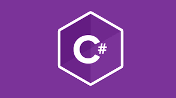

O que é Python?
O Python é uma linguagem de programação amplamente usada em aplicações da Web, desenvolvimento de software, ciência de dados e machine learning (ML). Os desenvolvedores usam o Python porque é eficiente e fácil de aprender e pode ser executada em muitas plataformas diferentes. O software Python pode ser baixado gratuitamente, integra-se bem a todos os tipos de sistema e agiliza o desenvolvimento.
Java
Java é uma linguagem de programação e plataforma de computação lançada pela primeira vez pela Sun Microsystems em 1995. Ela evoluiu de origens humildes para alimentar uma grande parte do mundo digital de hoje, fornecendo a plataforma confiável sobre a qual muitos serviços e aplicativos são construídos. Novos produtos inovadores e serviços digitais projetados para o futuro continuam a depender do Java também.
Enquanto a maioria dos aplicativos Java modernos combinam o Java runtime e o aplicativo juntos, ainda há muitos aplicativos e até mesmo alguns sites que não funcionarão a menos que você tenha um Java de desktop instalado. Java.com, este site, é destinado a consumidores que ainda podem precisar de Java para seus aplicativos de desktop – especificamente aplicativos voltados para Java
C#

C# é uma linguagem de programação criada pela Microsoft em 2000, sendo a principal linguagem da plataforma .NET. Ela é orientada a objetos, fortemente tipada e usada para desenvolvimento de aplicações desktop, web, mobile e jogos (com Unity).
R
R é uma linguagem focada em análise de dados e estatística, muito usada em ciência de dados, machine learning e pesquisa acadêmica. Ela tem uma vasta coleção de pacotes para manipulação e visualização de dados.